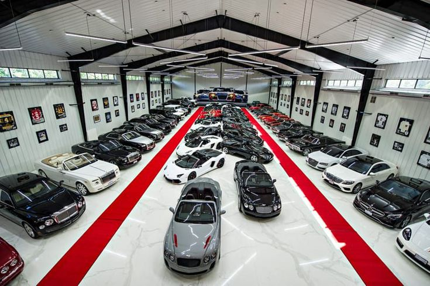

Garagem de carros de luxo
Uma garagem de carros de luxo é um espaço sofisticado e seguro, projetado para abrigar e exibir veículos de alto valor. Ela geralmente possui climatização, iluminação especial e pisos de qualidade, além de áreas para manutenção e detalhamento dos carros. Integrada a residências de alto padrão, a garagem reflete o estilo de vida e a paixão do proprietário por automóveis excepcionais, funcionando como um ambiente que celebra a beleza e a engenharia automotiva.
lancer Gt Evo

Motorização 2.0
Combustível Gasolina N/D
Potência (cv) 295 N/D
Torque (kgf.m) 37,32 N/D
Velocidade Máxima (km/h) 242 N/D
Tempo 0-100 (s) 6,3 N/D
Consumo cidade (km/l) 7,2 N/D
Consumo estrada (km/l) 11,8 N/D
Câmbio dupla embreagem man.sequ.com modo auto de 6 marchas
Tração 4x4
Skyline
Motorização: 2.0
Combustível: Gasolina
Potência (cv): 295
Torque (kgf.m): 37,32
Velocidade Máxima (km/h): 242
Tempo 0-100 (s): 6,3
Consumo cidade (km/l): 7,2
Consumo estrada (km/l): 11,8
Câmbio: dupla embreagem manual sequencial com modo automático de 6 marchas